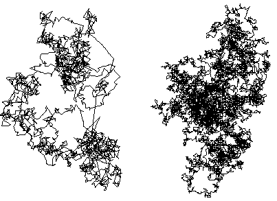

| Brownian moton is the unique random process with these properties: |
| 1. It is stationary. |
| 2. It has independent increments. |
| 3. It has finite standard deviation. |
| One way to generalize this is fractional Brownian motion, developed by Mandelbrot and Wallis in the 1960s to model rainfall patterns. |
| In fractional Brownian motion, the increments are normally distributed, but they are no longer independent. |
| On the left is a simulation of fBm in two dimensions, for comparison on the right is a simulation of Brownian motion. |
|  |
| Note the fBm picture has some regions where the path crowds together, others where it is more sparse. |
Return to fractional Brownian motion.